The Challenge
My main goal was to eliminate the excess confusion and complexity that typically goes into finding concerts and performances to attend, particularly on a somewhat more casual or spontaneous basis. So often, prospective concertgoers need to search multiple websites to get a sense of what’s happening in their city or region. This process is tedious and messy, typically leading to frustration and missed opportunities. Wouldn’t it be nice if show finding was less like feeling around in the dark and more like having a bird’s eye view?
The Solution
ShowBuddy is a relatively simple app that relieves users’ sense of being overwhelmed by the concert searching process. The key is to have an onboarding process with only two steps, setting one’s location and radius, and then how far in the future (or within what date range) one is looking for shows. ShowBuddy then presents the user with a list of concerts based on these preferences. Users can scroll through a list or toggle to a map view with pins for each show. A search icon allows for precise searching by artists, venues, or styles. Within this nonlinear search interface, users can explore by tapping event list items or map pins for additional details.
Click to view InVision prototype
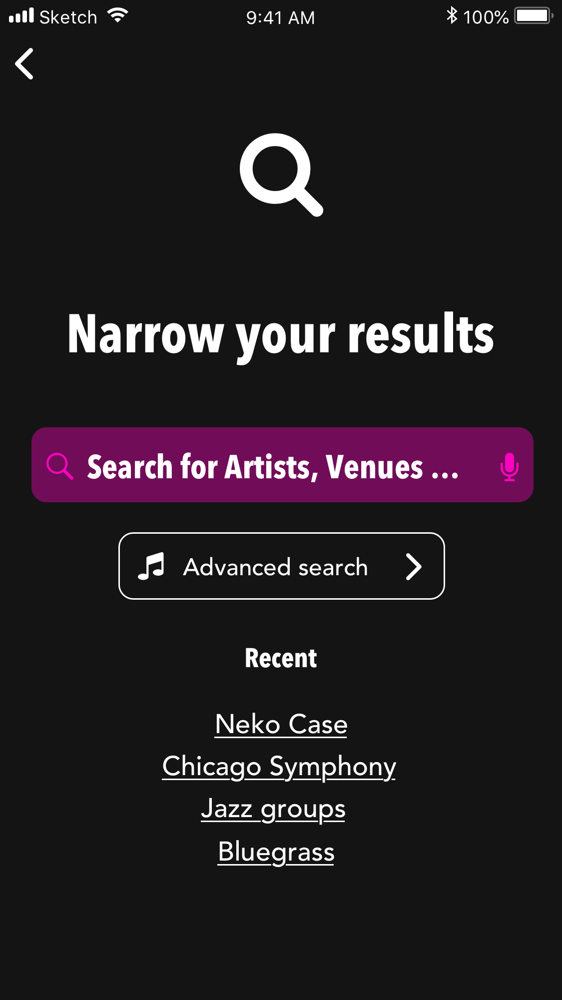
Search screen with recent searches and option to continue to more advanced search.
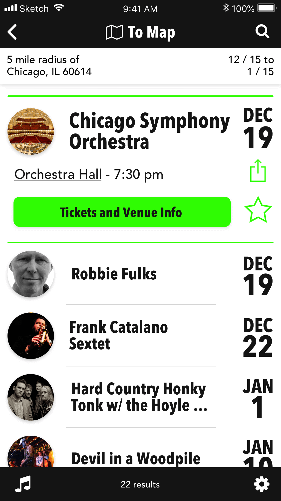
List view showcasing expanded view of concert details. Tap location and date bar to open edit screen. Green button leads to in-app browser with actual venue's concert details page. Tapping underlined venue name would open user's mapping application for directions.
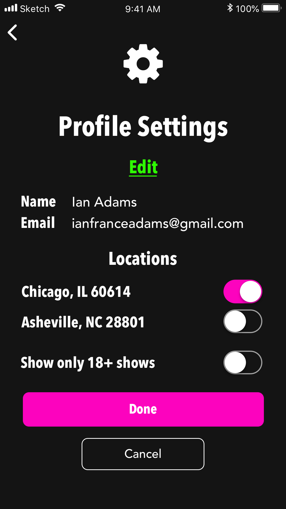
Profile screen for users with an account to edit their basic info and location preferences using switches. Also a switch for users needing to filter out 21+ shows.
The Process
Creating ShowBuddy started with a survey to get a sense of wider user habits regarding concert finding and going. It revealed a surprising breadth of musical interests and clear complaints regarding existing means of search. Given the organic, informal means that users often like to employ, such as social media and word of mouth, the ideal app might combine these natural, self-directed, exploratory approaches with an app that helps organize multiple information sources in one clear place.
Given major competitors like social media and especially the Bandsintown app, ease and simplicity combined with some level of personalization would likely make or break ShowBuddy’s success.
Most significant competitor that syncs with social media and users' own music libraries. Best for users focused on particular artists rather than on making more open, spontaneous plans. Some app reviews complained about search complexity.
Songkick is another attractive app with personalization features. Calendar search option is rather clunky though and searching by musical genre is not an option at all. No map, either.
Loudie is very socially oriented and successfully emphasizes spontaneity, although at the expense of search precision. It appears to only be set up for a couple major cities at this point.
The creation of personas helped make the needs of users more fully human. Further brainstorming through user stories and user flows clarified what exact features and screens would ultimately need building before getting into the actual visual design phase.
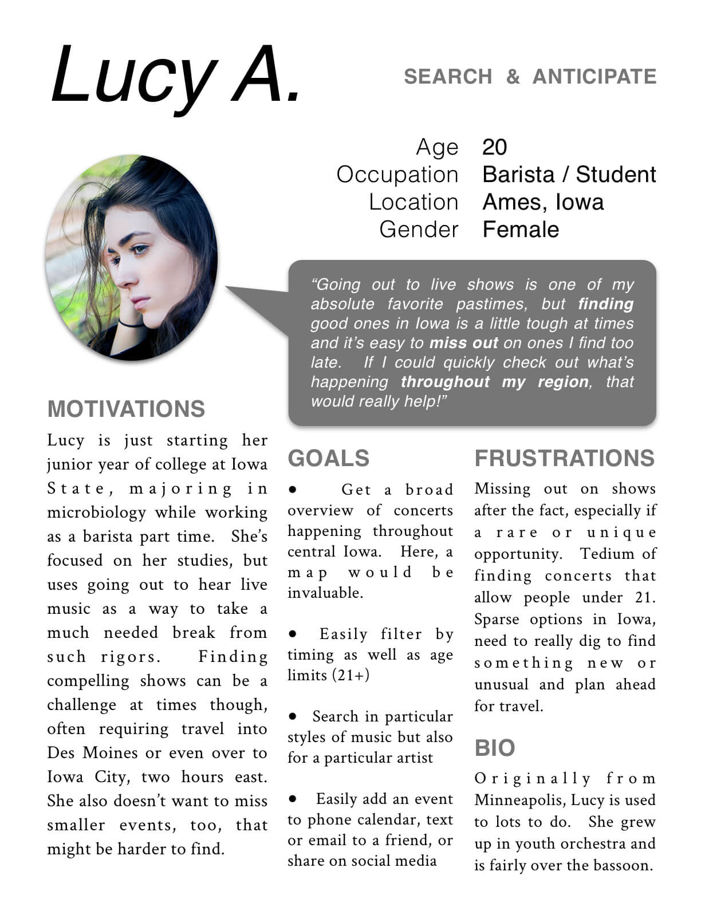
Sample persona based on actual user survey feedback expressing a need for filtering out 21+ shows. Click here to open all three personas as a PDF file in a new tab.
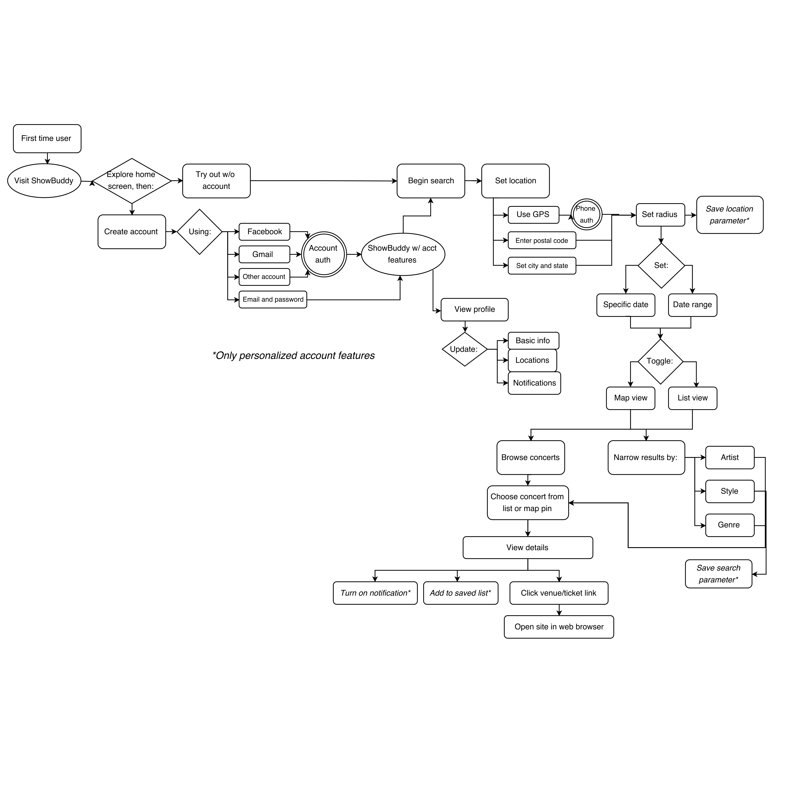
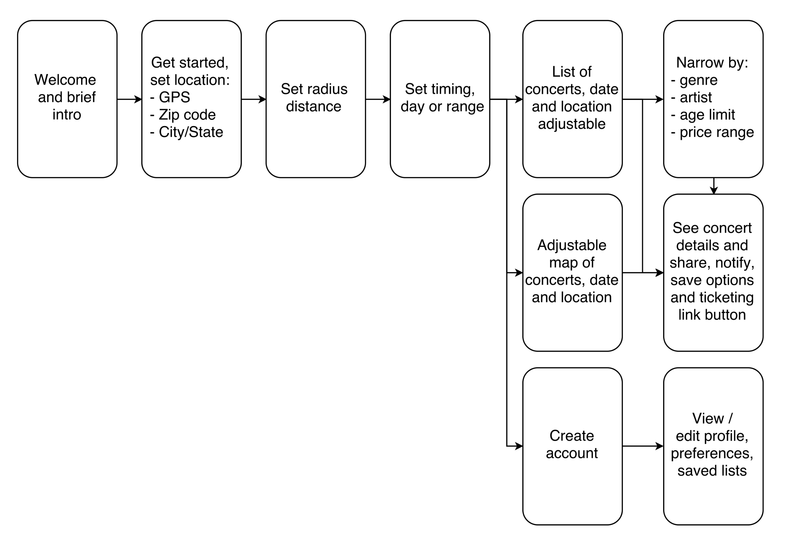
Branding & Visual Design
As ShowBuddy moved farther along the design process, I developed a brand aesthetic based on the bold, bright aesthetic of vintage neon theater signs.
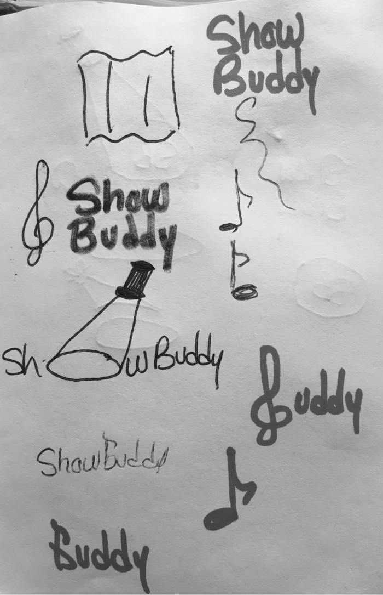
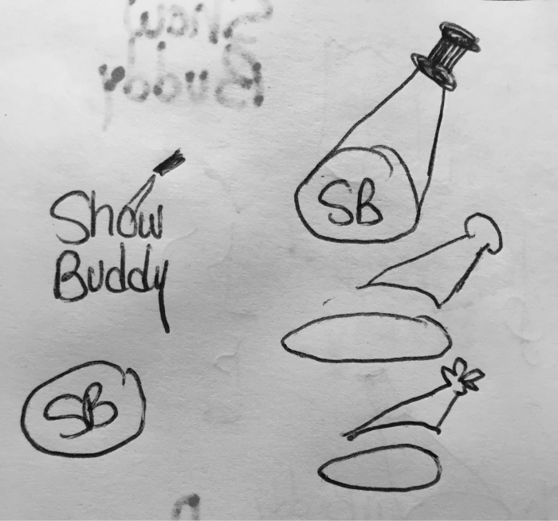
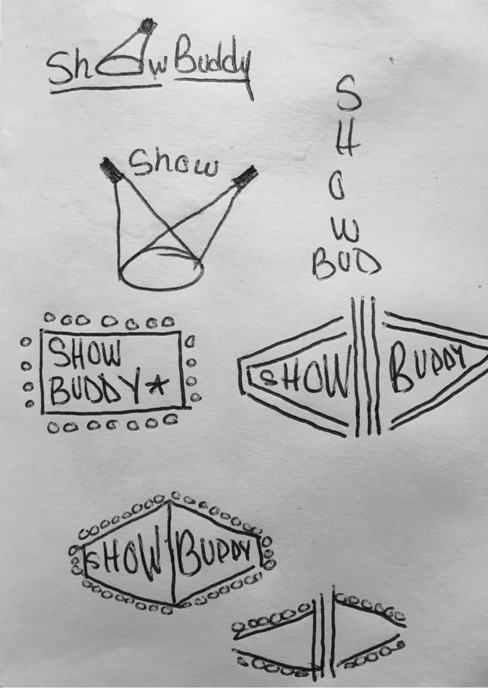
Thanks to sketching, a logo quickly came together. While the wide marquee look was a fun start, an experimental transposition of it in Sketch revealed the final version that was more conveniently square but still featuring the neon light shape. From here, the neon color scheme is an obvious inclination, with neon green a good complement to the pink. Adobe Color CC's color wheel helped with making these choices. A black background with bold white text evokes the feeling of older rock concert posters along with the neon scheme. I arrived at the Avenir Next Condensed Bold typeface when searching for something comparable to the interchangable plastic lettering of old backlit signs.
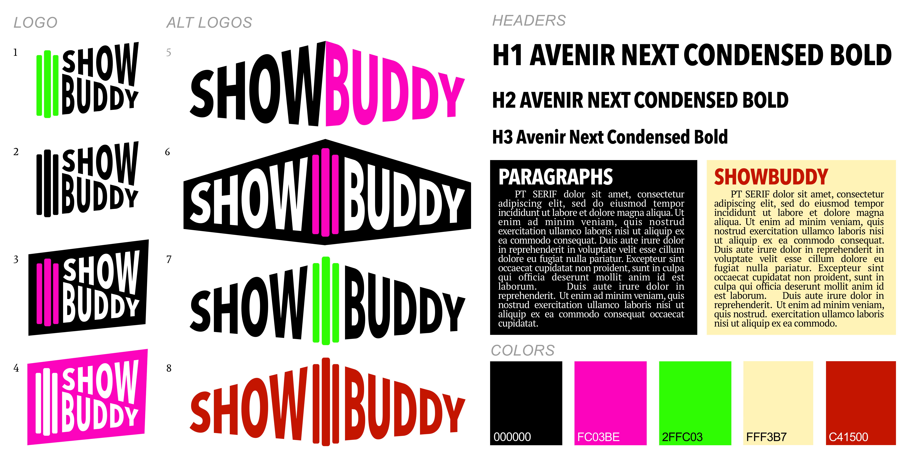
Here is my initial (and admittedly rather gaudy!) style guide that features the neon color scheme with a secondary, more refined color scheme (perhaps for classical concertgoers) and typeface. These were discarded or updated given the clarity and consistency requirements of a mobile app. Click here to open style guide as a PDF in a new tab.
Wireframing could now begin in earnest after this initial research and planning. Below is one of my first sets of low fidelity wireframes created in Balsamiq. With the encouragement of my mentor Chris Gillis, I also began to thoroughly study Apple's Human Interface Guidelines and clarify the appropriate use of modal views in a mobile context, as well as proven conventions regarding navigation bars and toolbars. Below the low fidelity wireframes are early efforts at interface mockups.
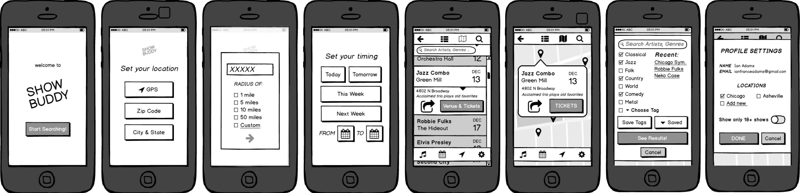
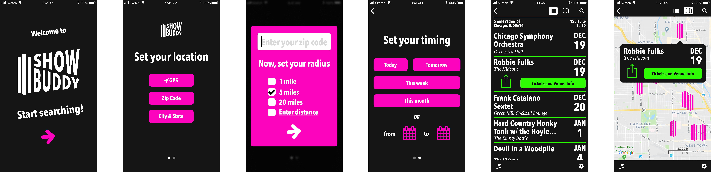
First user interface design iteration featuring appropriate navigation bars and toolbars.
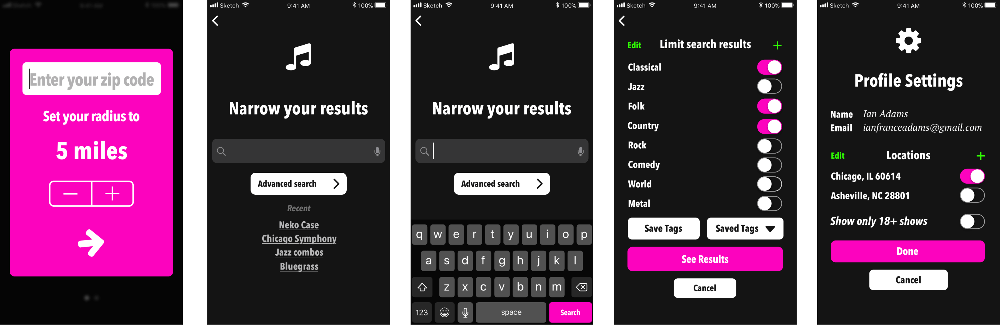
Further progress featuring a stepper control for easily setting one's distance radius and switches (rather than check boxes) for clearly turning on and off various preferences.
During this stage, A / B tests on UsabilityHub and in person user testing refined elements like the list view and the ideal shape for map pins. White backgrounds were preferable in browsing settings for readability.
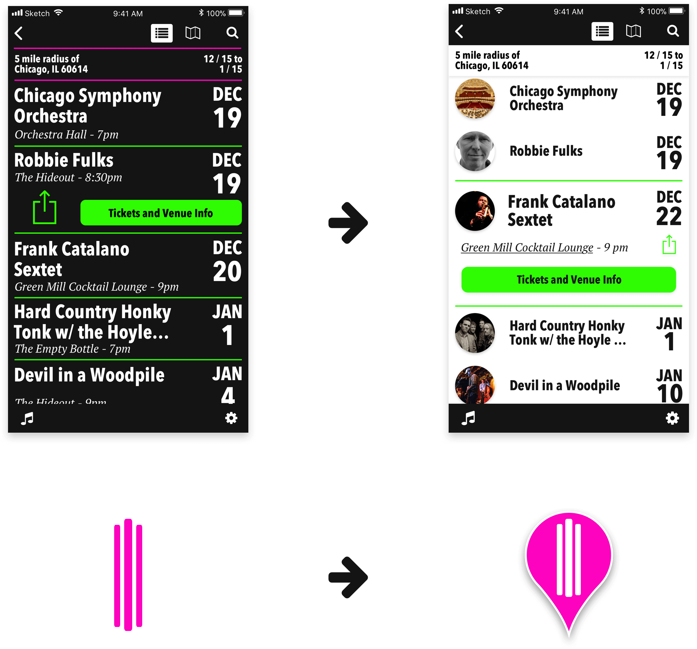
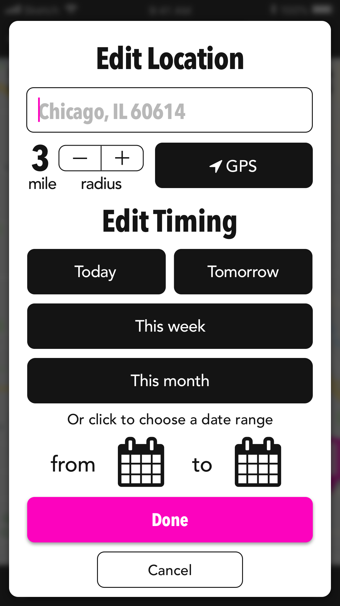
Based on one user's testing feedback, I added this time and location editing screen to prevent confusion. Before, when tapping the dates or location to edit, I sent the user back to the onboarding screens for these settings, making for a somewhat disorienting experience.
Another user's feedback led to this simplified search screen design. She noted that not all users will want advanced genre search options, so best to have them beyond an advanced search button to prevent feeling overwhelmed with too many choices.
Conclusion
Creating ShowBuddy was a challenging but rewarding experience. Once again, reverence for the process of user centered design has led to a product whose elements are in accord with proven principles, whether derived from the Apple Human Interface Guidelines or directly from user testing. This project vividly impressed upon me the unique demands of creating a mobile app that maximizes clarity for users by respecting existing design conventions. While further testing and iterations are always in order for deeper improvement and understanding of user needs, the current version of ShowBuddy should begin to enhance the concert finding experience.
Click to view InVision prototype
Back to top